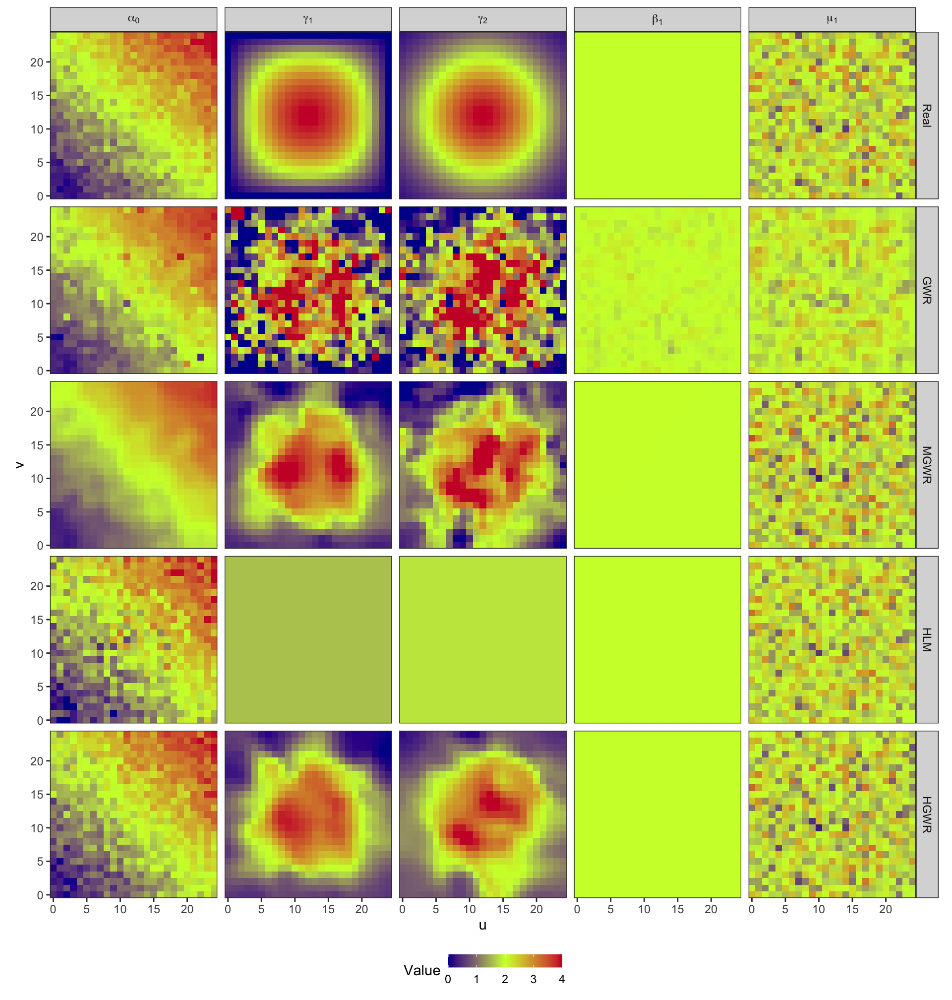
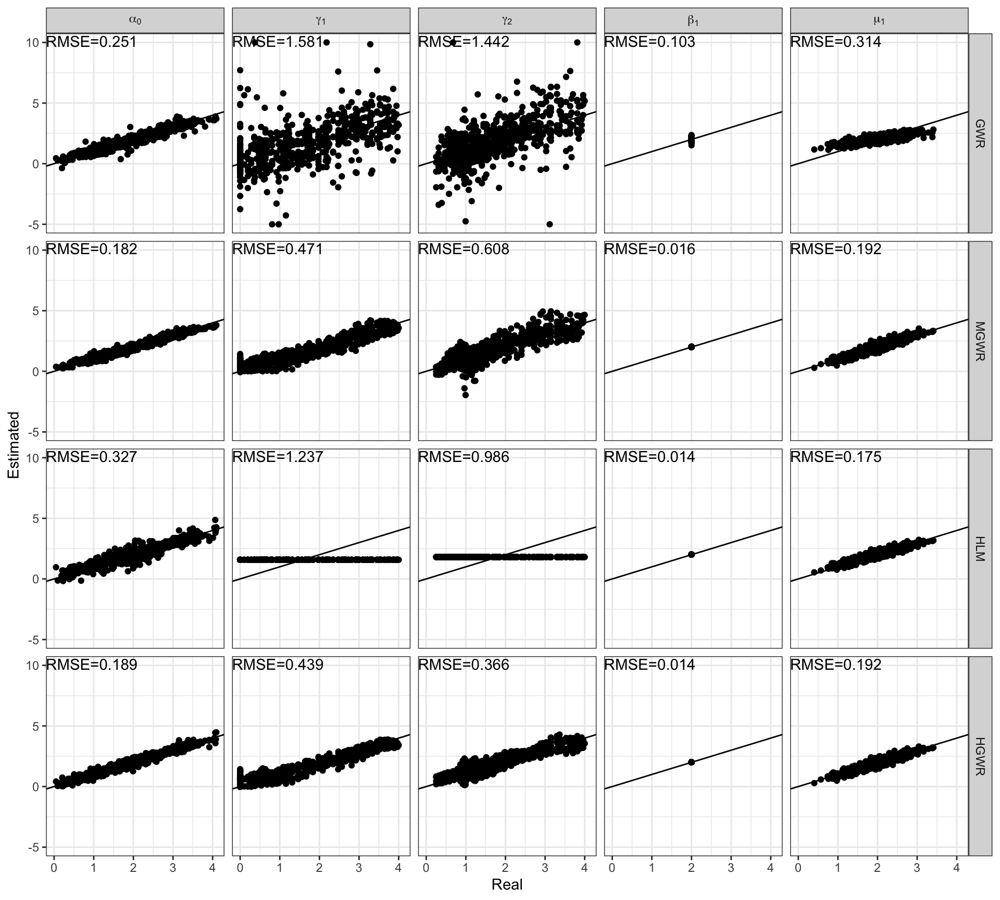
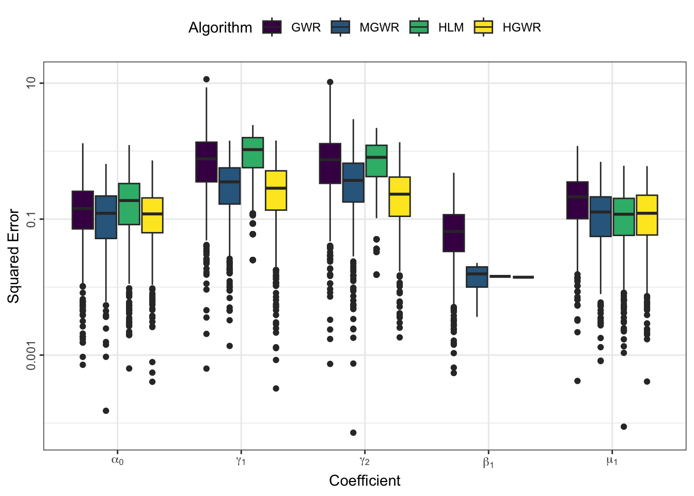
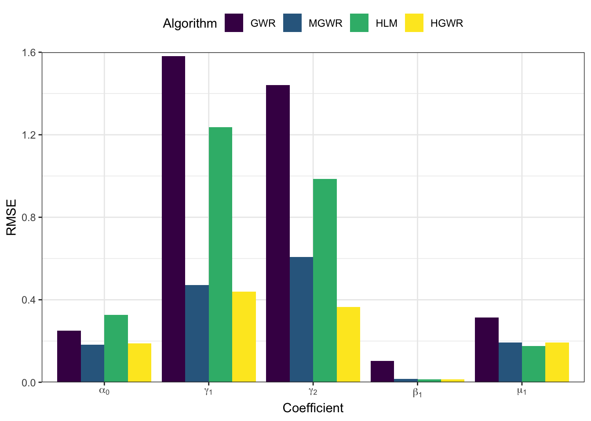

library(tidyverse)
library(ggpubr)
library(Metrics)
library(sf)
library(hgwrr)
library(GWmodel)
library(lmerTest)Hierarchical and geographically weighted regression (HGWR) is a spatial modelling method designed for data with a spatially hierarchical structure, i.e., samples are grouped by their locations. Variables are divied into group level and sample level. It calibrate three types of effects: local fixed effects, global fixed effects, and random effects. Only group level variables can be local fixed effects. In this post, the usage and some examples are going to be shown with R code.
Installation
The HGWR model is implemented with C++ and R codes. And we have published an R package hgwrr to provice easy-to-use user interfaces to build HGWR moddels.
From CRAN
Install the hgwrr package from CRAN is very easy, through
install.packages("hgwrr")Note if you are using Linux or macOS platforms, this package requires GSL to be installed and can be found by R. Please install it using your package manager, like apt, dnf, and brew. On Windows, the pre-built binary package would be provided by CRAN.
From Source Code
Please download the [R source package (v0.3.0)] and install it via the following code
R CMD INSTALL hgwrr_0.3-0.tar.gzPlease make sure that the following dependencies are already installed in your R environment:
- Armadillo
- GSL
Just the package-manager versions are enough.
Usage
An HGWR model can be calibrated using the following function,
hgwr(
formula, data, local.fixed, coords, bw,
alpha = 0.01, eps_iter = 1e-06, eps_gradient = 1e-06, max_iters = 1e+06,
max_retries = 1e+06, ml_type = HGWR_ML_TYPE_D_ONLY, verbose = 0
)There seems to be quite a few arguments, but most of them have default values which would be fine on most ocassions. The first five arguments are mandatory.
formula-
This argument accepts a formula object in R. Its format follows lme4 package. As there are two types of effects: fixed effects and random effects, we use the following format to specify both of them
dependent ~ fixed1 + fixed2 + (random1 + random2 | group) data-
It accepts a DataFrame object in R. All variables specified in formula are extracted from data. In this stage,
Spatial*DataFrameis not supported, and will not be supported in the future. local.fixed-
It accepts a list of character specifying which fixed effects are local. For example, if
fixed1needs to be locally fixed, then setlocal.fixedtoc("fixed1"). coords- It accepts a matrix of 2 columns. Each row is the longitude and latitude of each group.
bw- It accepts an integer or numeric number to specify the bandwidth used in geographically weighted process. Currently, it can only be adaptive bandwidth.
For other arguments, if the default values cause some problems, and you want to change some of them, please check the documentation of function hgwr() for more infomation.
Simulation Experiment
To carry out the experiment, there are some packages required to be in your R environment. Please install them if they are abscent.
The CRAN versions now are fine.
Data Generation
The data used in this experiment is generated by the following code. This process is inspired by Fotheringham, Yang, and Kang (2017).
nu <- 25
nv <- 25
ncoords <- nu * nv
coords <- matrix(c(rep(seq_len(nu) - 1, each = 25), rep(seq_len(nv) - 1, times = 25)), ncol = 2) %>% as.data.frame()
colnames(coords) <- c("u", "v")
u <- coords[["u"]]
v <- coords[["v"]]
g1 <- (36 - (6 - u/2)^2)*(36 - (6 - v/2)^2)/324
g2 <- 4 * exp(- (scale(u)^2 + scale(v)^2)/2)
h1 <- rep(2, times = ncoords)
set.seed(648)
z1 <- rnorm(ncoords, mean = 2, sd = 0.5)
set.seed(12574)
b0 <- (u + v) / 12 - 2 + rnorm(ncoords, mean = 2, sd = 0.2)
betas <- data.frame(Intercept = b0, g1, g2, h1, z1)
set.seed(648)
nsamples <- floor(runif(ncoords, 20, 50))
iloc <- rep(seq_len(ncoords), times = nsamples)
set.seed(1)
x <- MASS::mvrnorm(sum(nsamples), mu = rep(0, 4), Sigma = diag(4))
x[,1] <- aggregate(x[,1], by = list(iloc), FUN = mean)[["x"]] %>% rep(times = nsamples)
x[,2] <- aggregate(x[,2], by = list(iloc), FUN = mean)[["x"]] %>% rep(times = nsamples)
colnames(x) <- c("g1", "g2", "h1", "z1")
set.seed(2)
e <- rnorm(sum(nsamples))
y <- rowSums(cbind(1, x) * as.matrix(betas[iloc,])) + e
data <- cbind(y = y, x, group = iloc) %>% as.data.frame()
sim <- list(
data = data,
betas = betas,
coords = coords
)
sim_sf <- st_as_sf(with(sim, cbind(data, coords[data$group,])), coords = c("u", "v"))
glimpse(sim)List of 3
$ data :'data.frame': 21434 obs. of 6 variables:
..$ y : num [1:21434] 4.274 0.952 -2.278 1.21 4.547 ...
..$ g1 : num [1:21434] -0.154 -0.154 -0.154 -0.154 -0.154 ...
..$ g2 : num [1:21434] 0.109 0.109 0.109 0.109 0.109 ...
..$ h1 : num [1:21434] 3.169 -0.031 -1.092 -0.983 1.719 ...
..$ z1 : num [1:21434] -0.626 0.184 -0.836 1.595 0.33 ...
..$ group: num [1:21434] 1 1 1 1 1 1 1 1 1 1 ...
$ betas :'data.frame': 625 obs. of 5 variables:
..$ Intercept: num [1:625] 0.35 0.429 0.33 0.267 0.465 ...
..$ g1 : num [1:625] 0 0 0 0 0 0 0 0 0 0 ...
..$ g2 : num [1:625] 0.252 0.314 0.384 0.461 0.543 ...
..$ h1 : num [1:625] 2 2 2 2 2 2 2 2 2 2 ...
..$ z1 : num [1:625] 2.46 2.63 1.25 1.91 1.91 ...
$ coords:'data.frame': 625 obs. of 2 variables:
..$ u: num [1:625] 0 0 0 0 0 0 0 0 0 0 ...
..$ v: num [1:625] 0 1 2 3 4 5 6 7 8 9 ...With this data, we are going to calibrate a HGWR model, geographically weighted regression (GWR, Brunsdon, Fotheringham, and Charlton 1996) model, multiscale geographically weighted regression (MGWR, the PSDM implementation, Lu et al. 2017) model, and hierarchical linear model (HLM, Raudenbush 1993). The MGWR model requires a very large amout of memory and time, so we only demonstrate the workable codes here. The result we got on a high-performance computing platform is used instead.
Model Calibration
HGWR
A HGWR model is calibrated with the following code.
hgwr_formula <- y ~ g1 + g2 + h1 + (z1 | group)
hgwr_model <- hgwr(
hgwr_formula, sim$data, c("g1", "g2"), sim$coords, "CV",
kernel = "bisquared",
)
summary(hgwr_model)Hierarchical and geographically weighted regression model
=========================================================
Formula: hgwr_formula
Method: Back-fitting and Maximum likelihood
Data: sim$data
Diagnostics
-----------
Rsquared
0.908050
Scaled residuals
----------------
Min 1Q Median 3Q Max
-3.995269 -0.648274 0.000561 0.652537 3.530948
Other Information
-----------------
Number of Obs: 21434
Groups: group , 625GWR
sim_sp <- as(sim_sf, Class = "Spatial")
gwr_formula <- y ~ g1 + g2 + h1 + z1
gwr_bw <- bw.gwr(gwr_formula, sim_sp, approach = "AIC", adaptive = T, kernel = "bisquare")Take a cup of tea and have a break, it will take a few minutes.
-----A kind suggestion from GWmodel development group
Adaptive bandwidth (number of nearest neighbours): 13254 AICc value: 68302.68
Adaptive bandwidth (number of nearest neighbours): 8199 AICc value: 67235.53
Adaptive bandwidth (number of nearest neighbours): 5074 AICc value: 66677.95
Adaptive bandwidth (number of nearest neighbours): 3143 AICc value: 66381.08
Adaptive bandwidth (number of nearest neighbours): 1949 AICc value: 66152.06
Adaptive bandwidth (number of nearest neighbours): 1212 AICc value: 65879.63
Adaptive bandwidth (number of nearest neighbours): 755 AICc value: 65553.06
Adaptive bandwidth (number of nearest neighbours): 474 AICc value: 65089.52
Adaptive bandwidth (number of nearest neighbours): 299 AICc value: 64121.17
Adaptive bandwidth (number of nearest neighbours): 192 AICc value: 113016
Adaptive bandwidth (number of nearest neighbours): 366 AICc value: 64842.55
Adaptive bandwidth (number of nearest neighbours): 258 AICc value: 63736.27
Adaptive bandwidth (number of nearest neighbours): 232 AICc value: 63688.32
Adaptive bandwidth (number of nearest neighbours): 216 AICc value: 64235.33
Adaptive bandwidth (number of nearest neighbours): 241 AICc value: 63684.82
Adaptive bandwidth (number of nearest neighbours): 248 AICc value: 63701.3
Adaptive bandwidth (number of nearest neighbours): 238 AICc value: 63682.91
Adaptive bandwidth (number of nearest neighbours): 235 AICc value: 63681.33
Adaptive bandwidth (number of nearest neighbours): 234 AICc value: 63681.33 gwr_model <- gwr.basic(gwr_formula, sim_sp, bw = gwr_bw, adaptive = T, kernel = "bisquare")
gwr_model ***********************************************************************
* Package GWmodel *
***********************************************************************
Program starts at: 2023-03-30 11:46:44
Call:
gwr.basic(formula = gwr_formula, data = sim_sp, bw = gwr_bw,
kernel = "bisquare", adaptive = T)
Dependent (y) variable: y
Independent variables: g1 g2 h1 z1
Number of data points: 21434
***********************************************************************
* Results of Global Regression *
***********************************************************************
Call:
lm(formula = formula, data = data)
Residuals:
Min 1Q Median 3Q Max
-5.6729 -0.9458 -0.0075 0.9499 5.3801
Coefficients:
Estimate Std. Error t value Pr(>|t|)
(Intercept) 2.002434 0.009684 206.78 <2e-16 ***
g1 1.659038 0.057600 28.80 <2e-16 ***
g2 1.791212 0.056544 31.68 <2e-16 ***
h1 2.010065 0.009660 208.09 <2e-16 ***
z1 2.042761 0.009661 211.44 <2e-16 ***
---Significance stars
Signif. codes: 0 '***' 0.001 '**' 0.01 '*' 0.05 '.' 0.1 ' ' 1
Residual standard error: 1.417 on 21429 degrees of freedom
Multiple R-squared: 0.8064
Adjusted R-squared: 0.8064
F-statistic: 2.232e+04 on 4 and 21429 DF, p-value: < 2.2e-16
***Extra Diagnostic information
Residual sum of squares: 43019.04
Sigma(hat): 1.416769
AIC: 75771.36
AICc: 75771.37
BIC: 54445.03
***********************************************************************
* Results of Geographically Weighted Regression *
***********************************************************************
*********************Model calibration information*********************
Kernel function: bisquare
Adaptive bandwidth: 234 (number of nearest neighbours)
Regression points: the same locations as observations are used.
Distance metric: Euclidean distance metric is used.
****************Summary of GWR coefficient estimates:******************
Min. 1st Qu. Median 3rd Qu. Max.
Intercept -0.36804 1.37847 1.98864 2.63158 3.8950
g1 -5.46208 0.37769 1.59423 2.78590 11.7942
g2 -5.90918 0.79411 1.74163 2.85702 13.1842
h1 1.51922 1.94629 2.01310 2.07438 2.3601
z1 1.14097 1.83026 2.01883 2.21836 2.8169
************************Diagnostic information*************************
Number of data points: 21434
Effective number of parameters (2trace(S) - trace(S'S)): 1348.983
Effective degrees of freedom (n-2trace(S) + trace(S'S)): 20085.02
AICc (GWR book, Fotheringham, et al. 2002, p. 61, eq 2.33): 63681.33
AIC (GWR book, Fotheringham, et al. 2002,GWR p. 96, eq. 4.22): 62482
BIC (GWR book, Fotheringham, et al. 2002,GWR p. 61, eq. 2.34): 50756.14
Residual sum of squares: 22014.71
R-square value: 0.9009503
Adjusted R-square value: 0.8942974
***********************************************************************
Program stops at: 2023-03-30 11:47:26 HLM
hlm_model <- lmerTest::lmer(y ~ g1 + g2 + h1 + z1 + (z1 | group), sim$data)
summary(hlm_model)
performance::r2(hlm_model)Linear mixed model fit by REML. t-tests use Satterthwaite's method [
lmerModLmerTest]
Formula: y ~ g1 + g2 + h1 + z1 + (z1 | group)
Data: sim$data
REML criterion at convergence: 64443.4
Scaled residuals:
Min 1Q Median 3Q Max
-3.9791 -0.6478 0.0011 0.6521 3.5484
Random effects:
Groups Name Variance Std.Dev. Corr
group (Intercept) 0.7750 0.8804
z1 0.2511 0.5011 0.01
Residual 1.0087 1.0044
Number of obs: 21434, groups: group, 625
Fixed effects:
Estimate Std. Error df t value Pr(>|t|)
(Intercept) 1.991e+00 3.595e-02 6.202e+02 55.377 < 2e-16 ***
g1 1.581e+00 2.093e-01 6.230e+02 7.552 1.53e-13 ***
g2 1.805e+00 1.988e-01 6.261e+02 9.079 < 2e-16 ***
h1 2.014e+00 7.043e-03 2.037e+04 286.022 < 2e-16 ***
z1 2.026e+00 2.136e-02 6.228e+02 94.830 < 2e-16 ***
---
Signif. codes: 0 '***' 0.001 '**' 0.01 '*' 0.05 '.' 0.1 ' ' 1
Correlation of Fixed Effects:
(Intr) g1 g2 h1
g1 0.007
g2 0.021 -0.041
h1 0.000 -0.001 0.000
z1 0.007 0.001 0.000 0.002
# R2 for Mixed Models
Conditional R2: 0.902
Marginal R2: 0.803MGWR
mgwr_model <- gwr.multiscale(y ~ g1 + g2 + h1 + z1, sim_sp, adaptive = T)
mgwr_model ***********************************************************************
* Package GWmodel *
***********************************************************************
Program starts at: 2023-01-07 00:33:30
Call:
gwr.multiscale(formula = y ~ g1 + g2 + h1 + z1, data = sim_sp,
adaptive = T, hatmatrix = F, parallel.method = "omp", parallel.arg = 48)
Dependent (y) variable: y
Independent variables: g1 g2 h1 z1
Number of data points: 21434
***********************************************************************
* Multiscale (PSDM) GWR *
***********************************************************************
*********************Model calibration information*********************
Kernel function: bisquare
Adaptive bandwidths for each coefficient(number of nearest neighbours):
(Intercept) g1 g2 h1 z1
Bandwidth 382 1054 474 19875 62
****************Summary of GWR coefficient estimates:******************
Min. 1st Qu. Median 3rd Qu. Max.
Intercept 0.244383 1.451943 1.998243 2.611283 3.8138
g1 -0.072043 0.746596 1.426176 2.567027 4.2021
g2 -1.955412 0.969786 1.738936 2.659654 4.9470
h1 2.003644 2.010011 2.015701 2.019937 2.0227
z1 0.287334 1.691472 2.039915 2.376235 3.5291
************************Diagnostic information*************************
***********************************************************************
Program stops at: 2023-01-07 04:58:17 Estimate Analysis
As the actual values of coefficients are already known, we can compare the performance of these models by comparing the closeness between their estimates and actual values.
Create some handy variables.
coef_names <- c("Intercept", "g1", "g2", "h1", "z1")
coef_names_plot <- c("Intercept", "g1", "g2", "z1")
coef_name_map <- list(
Intercept = "alpha[0]",
g1 = "gamma[1]",
g2 = "gamma[2]",
h1 = "beta[1]",
x1 = "beta[1]",
z1 = "mu[1]"
)
coef_name_labels <- list(
Intercept = bquote(alpha[0]),
g1 = bquote(gamma[1]),
g2 = bquote(gamma[2]),
h1 = bquote(beta[1]),
x1 = bquote(beta[1]),
z1 = bquote(mu[1])
)
models_name <- c("GWR", "MGWR", "HLM", "HGWR")Firstly, we collect coefficient estimates.
### Real values
beta0 <- sim$betas[coef_names]
### HGWR
hgwr_betas <- coef(hgwr_model)[coef_names]
### GWR
gwr_betas <- gwr_model$SDF@data[coef_names] %>%
aggregate(by = list(sim$data$group), FUN = mean) %>%
as.tibble() %>%
select(all_of(coef_names))Warning: `as.tibble()` was deprecated in tibble 2.0.0.
ℹ Please use `as_tibble()` instead.
ℹ The signature and semantics have changed, see `?as_tibble`.### MGWR
mgwr_betas <- mgwr_model$SDF@data[coef_names] %>%
aggregate(by = list(sim$data$group), FUN = mean) %>%
as.tibble() %>%
select(all_of(coef_names))
### HLM
hlm_betas <- coef(hlm_model)$group
colnames(hlm_betas)[1] <- "Intercept"
hlm_betas <- hlm_betas[coef_names]
models_coef <- map(models_name, ~ get(paste0(tolower(.x), "_betas")))
names(models_coef) <- models_name
models_coef_real <- c(list(Real = beta0), models_coef)Then, plot estimate values at their location and the real values to see their distributions.
models_coef_real %>%
map_dfr(function(x) {
select(x, all_of(coef_names)) %>%
map_dfr(~ data.frame(Value = .x, sim$coords), .id = "Coefficient")
}, .id = "Algorithm") %>%
mutate(Algorithm = ordered(as.factor(Algorithm), names(models_coef_real)),
Coefficient = ordered(as.factor(Coefficient), coef_names,
labels = coef_name_map[coef_names])) %>%
ggplot(aes(u, v, fill = Value)) + geom_raster() +
scale_x_continuous(expand = expansion()) +
scale_y_continuous(expand = expansion()) +
scale_fill_gradient2(limits = c(0, 4), low = "#000099",
mid = "#CCFF33", high = "#CC0033",
midpoint = 2, oob = scales::squish) +
facet_grid(rows = vars(Algorithm), cols = vars(Coefficient), labeller = label_parsed) +
coord_fixed() + theme_bw() +
theme(legend.position = "bottom", legend.key.height = unit(10, "pt")) 
A scatter plot along with it may be useful.
beta_hat_real <- models_coef %>%
map_dfr(function(x) {
map_dfr(coef_names, ~ data.frame(Coefficient = .x, Estimated = x[[.x]], Real = beta0[[.x]]))
}, .id = "Algorithm") %>%
mutate(Algorithm = ordered(as.factor(Algorithm), names(models_coef)),
Coefficient = ordered(as.factor(Coefficient), coef_names, labels = coef_name_map[coef_names]))
beta_hat_rmse <- beta_hat_real %>%
group_nest(Algorithm, Coefficient) %>%
mutate(rmse = map(data, ~ sqrt(mean((.x$Estimated - .x$Real)^2))),
data = NULL)
ggplot(beta_hat_real, aes(x = Real, y = Estimated)) +
geom_point() + geom_abline(intercept = 0, slope = 1) +
geom_text(aes(x = -Inf, y = Inf, label = sprintf("RMSE=%.3f", rmse)),
data = beta_hat_rmse, hjust = 0, vjust = 1.2) +
scale_y_continuous(limits = c(-5, 10), oob = scales::squish) +
facet_grid(rows = vars(Algorithm), cols = vars(Coefficient), labeller = label_parsed) +
theme_bw()
From these two figures, we can find that:
- In the results of GWR, spatial heterogeneity is revealed in estimates for all variables. Although \(\hat{\beta}_1\) should be constant across the study area, GWR still generate spatially varying estimates for it. This is a kind of over-fitting from the spatial perspective. Besides, as the bandwidth is small, estimates for \(\gamma_1\) and \(\gamma_2\) are too local. Consequently, there are quite a few outliers disrupting the spatial trend.
- MGWR partly gets over issues of GWR by adopting parameter-specified bandwidths, instead of a uniform bandwidth. And it performs better when estimating \(\gamma_1\) and \(\gamma_2\). For global fixed effects, MGWR still generates spatially varying estimates, but they vary much slightly than estimates from GWR. For random effects, the results are slightly smoothed as well. MGWR also borrow a few points from neighbors. There is another serious problem in MGWR that it requires too much computing time and memory.
- In the results of HLM, there is only one estimate for \(\beta_1\) across the whole area. And estimates for \(\mu_1\), The problem lies in estimates for \(\gamma_1\) and \(\gamma_2\). As they are fixed effects in HLM, their estimates are also constant for all samples. However, spatial heterogeneity is expected in them.
- HGWR is the final solution. For global fixed effects, it generates globally constant estimates for all samples. For random effects, it would not smooth the estimates because they are not obtained by borrowing points. And for local fixed effects, we can discover spatial heterogeneity from their estimates. And it would not repeat computation for samples at each location. Thus, only the number of locations obviously affects the computation efficiency. This can reduce a large amount of computing time and memory.
There is an animation demonstrating the problem about bandwidth we addressed above.
As shown in this video, bandwidths have inequal spatial scale for two samples (represented by cubes). Both the samples represented by large red cubes and large blue cubes take 41 neighbour samples to calibrate GWR models. For the red one, neighbours on 8 nearest locations are taken. But the figure for the blue one is only 6. This situation means estimated coefficients are more smoothed for the red samples. In other words, estimations for the blue samples are much local.
HGWR overcome this drawback by introducing hierarchical structure with a special designed backfitting estimator. With the popularity of spatiotemporal big data, situations wherein the specific parameters for which HGWR was optimized are becoming more prevalent, suggesting that HGWR holds considerable promise as a useful tool for analyzing such data sets.
Estimation Errors
We can use some indicators to evaulate estimation errors for each model and coefficient. The following code generate a box-plot of absolute coefficient errors \(\mathrm{AE}\), which is \[ \mathrm{AE}_i = \left| r_i - e_i \right| \] where \(r_i\) reprsents the real value at sample \(i\), and \(e_i\) represents the corresponding estimate.
models_coef %>%
map(~ select(.x, all_of(coef_names))) %>%
map_dfr(function(x) {
map2_dfr(x, names(x), ~ data.frame(ae = ae(beta0[[.y]], .x)), .id = "Coefficient")
}, .id = "Algorithm") %>%
mutate(Algorithm = ordered(as.factor(Algorithm), names(models_coef)),
Coefficient = ordered(as.factor(Coefficient), coef_names)) %>%
arrange(Coefficient, Algorithm) %>%
ggplot(aes(x = Coefficient, y = ae, fill = Algorithm)) + geom_boxplot() +
scale_y_log10(name = 'Squared Error', labels = ~ sprintf("%g", .x)) +
scale_x_discrete(labels = coef_name_labels[coef_names]) +
theme_bw() +
theme(legend.position = "top", axis.text.y = element_text(angle = 90, hjust = 0.5))
And the following code generate a bar-plot showing root mean squared errors \(\mathrm{RMSE}\) of each coefficient, which is \[ \mathrm{RMSE} = \sum_{i=1}^n \left(r_1-e_i\right)^2 \] where \(r_i\) reprsents the real value at sample \(i\), and \(e_i\) represents the corresponding estimate.
models_coef %>%
map_dfr(function (alg) {
map_dfr(coef_names, function (coef, real) {
est_rmse <- rmse(real[[coef]], alg[[coef]])
data.frame(Coefficient = coef, Value = est_rmse)
}, beta0)
}, .id = "Algorithm") %>%
mutate(Algorithm = ordered(as.factor(Algorithm), c("GWR", "MGWR", "HLM", "HGWR")),
Coefficient = ordered(as.factor(Coefficient), coef_names)) %>%
ggplot(aes(x = Coefficient, y = Value, fill = Algorithm)) +
geom_bar(stat = 'identity', position = position_dodge()) + ylab("RMSE") +
scale_y_continuous(limits = c(0, 1.6), oob = scales::squish, expand = expansion()) +
scale_x_discrete(labels = coef_name_labels[coef_names]) +
theme_bw() + theme(legend.position = "top")
From the perspective of estimation errors, HGWR significantly reduces the estimation error for local fixed effects. It can get over the affect of global fixed effects and random effects.
Summary
In this post we introduced how to calibrate an HGWR model using R package hgwrr. It is demonstrated that HGWR could properly estimate local fixed effects, global fixed effects, and random effects simultaneously. HGWR could usually successfully distinguish local fixed effects from other effect types. For local fixed effects, spatial heterogeneity is considered as with GWR; moreover, global fixed effects and random effects are estimated as accurately as when using HLM. Thus, HGWR can be regarded as a successful combination of GWR and HLM.
References
Brunsdon, Chris, A. Stewart Fotheringham, and Martin E. Charlton. 1996. “Geographically Weighted Regression: A Method for Exploring Spatial Nonstationarity.” Geographical Analysis 28 (4): 281–98. https://doi.org/10.1111/j.1538-4632.1996.tb00936.x.
Fotheringham, A. Stewart, Wenbai Yang, and Wei Kang. 2017. “Multiscale Geographically Weighted Regression (MGWR).” Annals of the American Association of Geographers 107 (6): 1247–65. https://doi.org/10.1080/24694452.2017.1352480.
Lu, Binbin, Chris Brunsdon, Martin Charlton, and Paul Harris. 2017. “Geographically Weighted Regression with Parameter-Specific Distance Metrics.” International Journal of Geographical Information Science 31 (5): 982–98. https://doi.org/10.1080/13658816.2016.1263731.
Raudenbush, Stephen W. 1993. “Hierarchical Linear Models and Experimental Design.” In Applied Analysis of Variance in Behavioral Science, 459–96. L. K. Edwards.